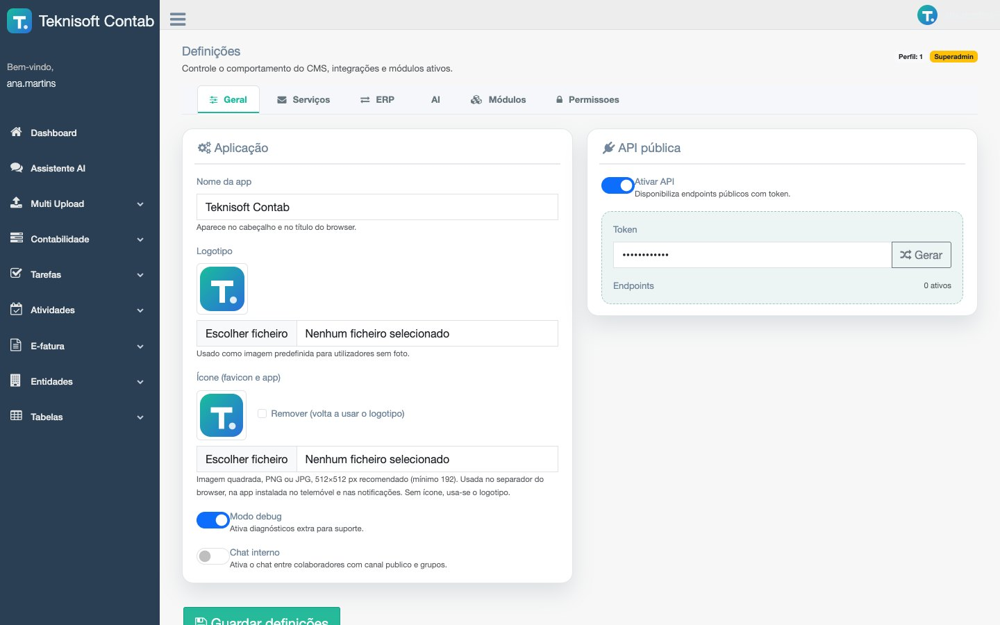
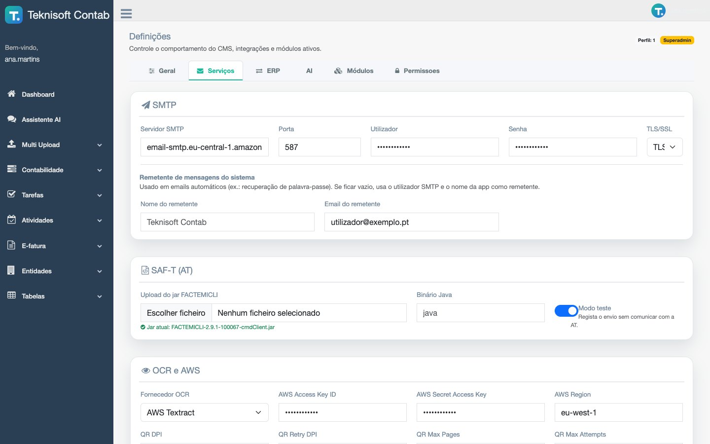
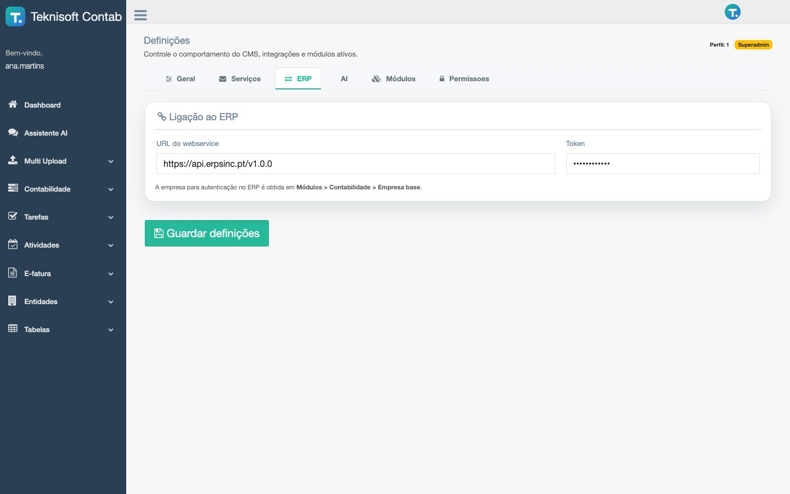
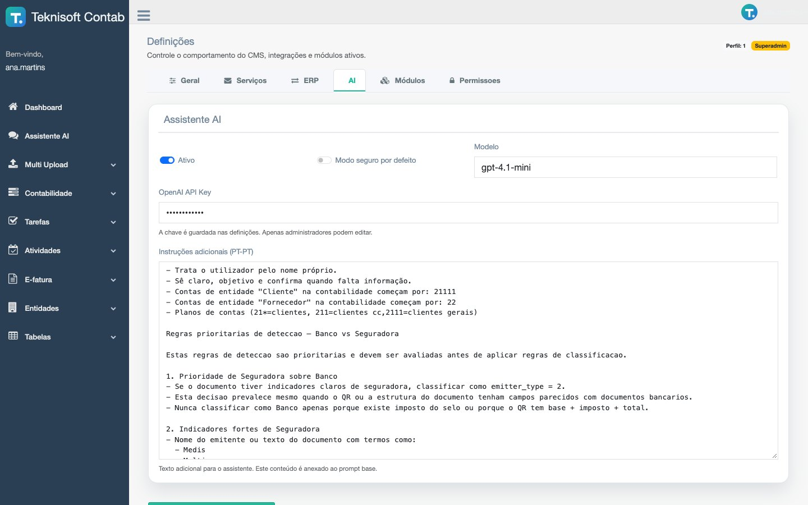
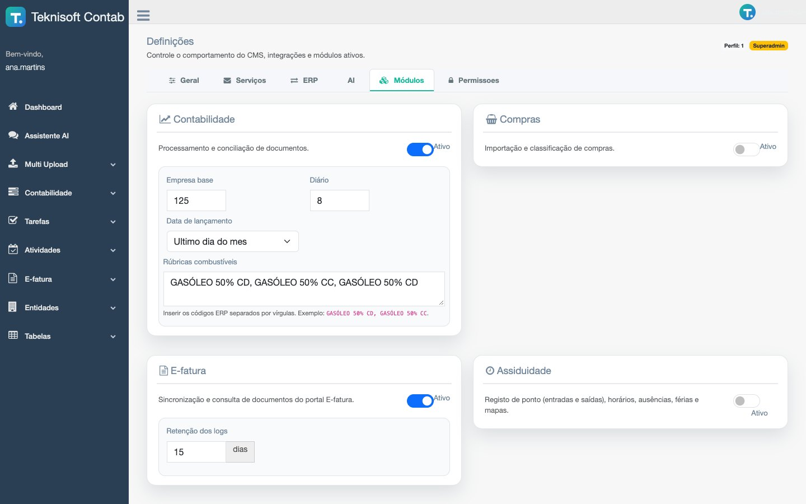
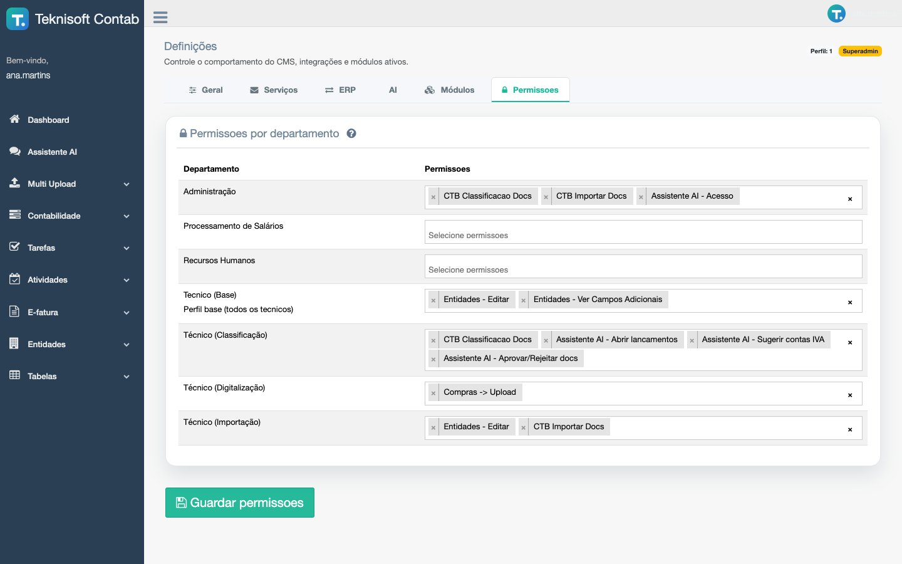
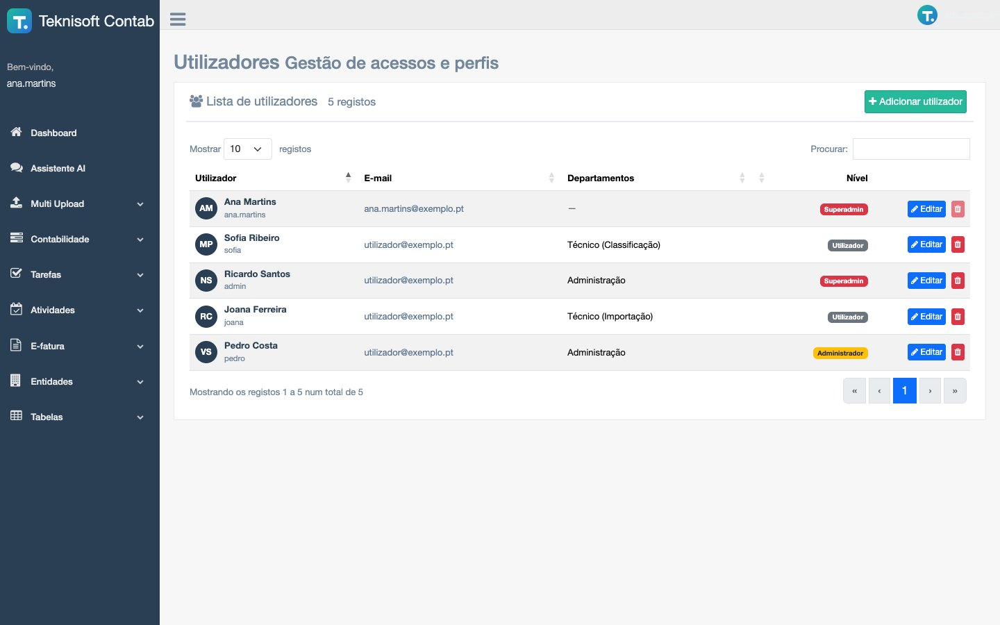
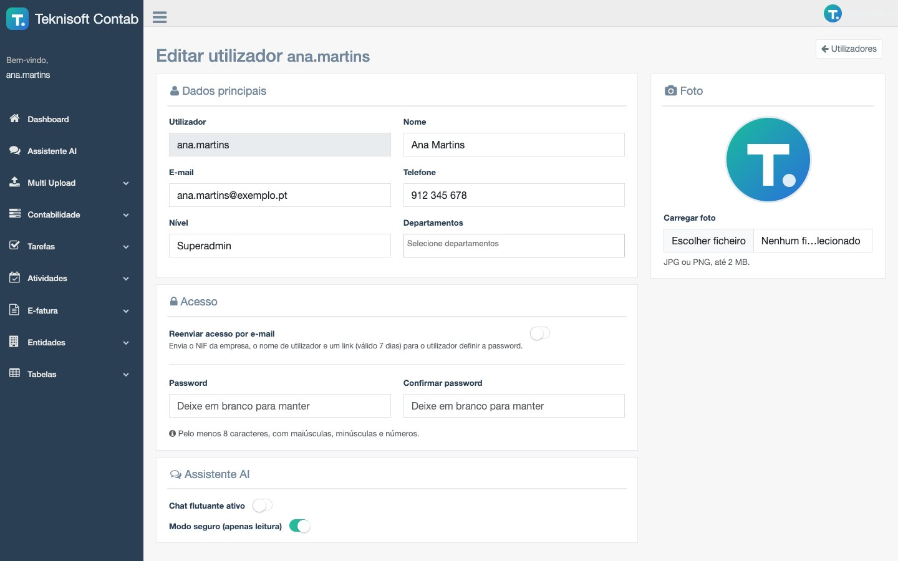
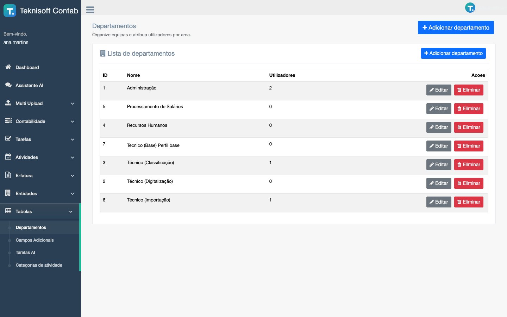
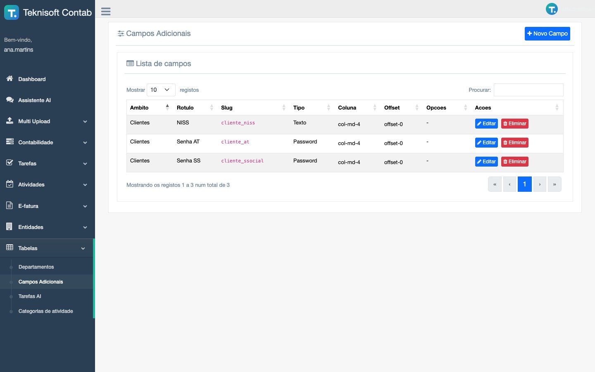

Parâmetros e configuração
Tudo o que o administrador deve configurar antes de pôr a equipa a classificar: aplicação, serviços externos, ligação ao ERP, inteligência artificial, módulos, permissões, utilizadores e tabelas de apoio.
Menu do perfil (canto superior direito) > Definições, endereço definicoes. Só administradores e superadministradores veem este ecrã. As definições valem para a empresa (tenant) em que entrou.
Ordem recomendada na primeira instalação
- Geral: nome, logótipo e ícone da aplicação.
- Serviços: SMTP para os e-mails, SAF-T (FACTEMICLI) e o motor de OCR.
- ERP: endereço e token do webservice ERP-SINC.
- Módulos: ativar a Contabilidade e indicar a Empresa base, o Diário e a data de lançamento.
- AI: ativar o assistente, chave e modelo, e escrever as regras gerais de classificação.
- Departamentos e Permissões; depois criar os utilizadores.
- Entidades: confirmar as empresas cliente e a base ERP de cada uma (ver Entidades).
Geral

| Campo | Para que serve |
|---|---|
| Nome da app | Aparece no cabeçalho, no separador do browser, na app instalada no telemóvel e nos calendários sincronizados. |
| Logotipo | Imagem da marca, também usada como foto por omissão dos utilizadores. |
| Ícone (favicon e app) | Imagem quadrada (512×512 recomendado). Usada no browser, na app instalada e nas notificações. |
| Modo debug | Grava diagnósticos adicionais (leitura de QR, chamadas ao ERP) para o suporte. Desligar em uso normal. |
| Chat interno | Ativa o chat entre colaboradores, com canal público e grupos. |
| API pública | Disponibiliza endpoints de consulta protegidos por token (botão Gerar). |
Serviços

SMTP
Servidor, porta, utilizador, senha e encriptação (TLS/SSL) para os e-mails automáticos: recuperação de palavra-passe, convites de acesso, envio de declarações. Em Remetente de mensagens do sistema define o nome e o e-mail que os destinatários veem.
SAF-T (AT)
Carregue o jar FACTEMICLI fornecido pela AT e indique o binário Java. Com Modo teste ligado, o envio é registado sem comunicar com a AT, útil para formação e validação.
OCR e AWS
O Fornecedor OCR pode ser o Tesseract (local, por omissão) ou o AWS Textract (maior precisão em digitalizações difíceis; requer chaves AWS e região). Se o Textract falhar, a aplicação recorre automaticamente ao Tesseract.
Os parâmetros QR DPI / Retry DPI / Max Pages / Max Attempts / Parallel Uploads controlam a leitura do código QR: resolução da primeira tentativa, resolução da segunda, quantas páginas analisar e quantos ficheiros processar em paralelo.
Valores demasiado baixos (afinados só para velocidade) fazem falhar a deteção em PDF com várias faturas. Se começarem a aparecer documentos sem leitura, reponha os valores recomendados pelo suporte antes de investigar outras causas.
ERP

Indique o URL do webservice ERP-SINC e o Token de acesso. Todas as consultas (plano de contas, ligações, movimentos, balancete) e a importação de lançamentos passam por aqui. A empresa usada para autenticar no ERP é a Empresa base definida em Módulos > Contabilidade.
O ERP de destino (Eticadata ou Primavera) é transparente para o utilizador: o ERP-SINC traduz os pedidos. Ver Integrações.
AI

| Campo | Para que serve |
|---|---|
| Ativo | Liga o Assistente AI e a sugestão de contas por IA. |
| Modo seguro por defeito | Os novos utilizadores começam com o assistente em modo só de leitura (não executa alterações sem confirmação). |
| Modelo / OpenAI API Key | Modelo de linguagem a usar e respetiva chave (apenas administradores a veem e editam). |
| Instruções adicionais (PT-PT) | Texto anexado às instruções base do assistente. A secção que começa por "Regras de classificação" é lida pelo motor de sugestão como regras gerais do gabinete. Ver Regras personalizadas. |
Módulos

Contabilidade
| Campo | Para que serve |
|---|---|
| Empresa base | Código da empresa ERP usada para autenticar (EMP) em todas as chamadas ao ERP-SINC. |
| Diário | Diário contabilístico onde os documentos importados são lançados (por exemplo 8, "Importação e-fatura"). |
| Data de lançamento | Data do documento ou Último dia do mês. Define a data do movimento no ERP. |
| Rúbricas combustíveis | Códigos ERP de rubricas de combustível (por exemplo "GASÓLEO 50% CD"). Nestas linhas aplica-se a regra de dedução parcial de IVA (50%). |
Compras, E-fatura e Assiduidade
- Compras: fluxo separado de importação e classificação de compras (Contabilidade > Importação de Compras).
- E-fatura: sincronização com o portal da AT; Retenção dos logs define quantos dias se guardam os ficheiros de trabalho.
- Assiduidade: registo de ponto, horários, ausências e férias (ver Assiduidade).
Permissões

As permissões dos técnicos (perfil Utilizador) vêm exclusivamente dos departamentos. Um técnico pode pertencer a vários; as permissões somam-se. Administradores têm sempre acesso total.
As permissões deste departamento especial aplicam-se automaticamente a todos os técnicos, mesmo sem atribuição. Use-o para o mínimo comum (por exemplo, ver os campos adicionais da ficha do cliente). Não pode ser eliminado.
| Permissão | Permite |
|---|---|
| Compras -> Upload | Carregar documentos no Multi Upload. |
| Entidades - Editar / Ver Campos Adicionais | Alterar fichas de clientes / ver campos adicionais (incluindo senhas guardadas). |
| CTB Classificacao Docs | Classificar documentos (botão Classificar). |
| CTB Importar Docs | Aceder à vista Importação e enviar para o ERP. |
| CTB Lancamentos - Aceder / Remover locais | Consultar e editar lançamentos ERP / remover registos locais. |
| CTB E-fatura - Aceder / Sincronizar / Gerir credenciais | Ver documentos E-fatura, lançar sincronizações, gerir credenciais do portal. |
| Assistente AI - Acesso / Criar tarefas / Abrir lançamentos / Sugerir contas IVA / Aprovar-Rejeitar docs | Usar o assistente e as ações que este pode executar. |
| Assiduidade - Ver mapas da equipa / Corrigir picagens e aprovar ausências | Consulta da equipa / gestão de assiduidade. |
Além disto, há permissões por empresa cliente (classificação, importação, SAF-T, IVA, DP IVA, Confirmação de Pasta), atribuídas na ficha de cada cliente. Ver Entidades > Admin.
Utilizadores


- Nível: Superadmin, Administrador ou Utilizador.
- Departamentos: determinam as permissões do técnico.
- Reenviar acesso por e-mail: envia o NIF da empresa, o utilizador e uma ligação (válida 7 dias) para o próprio definir a palavra-passe. Assim nunca é preciso comunicar senhas.
- Palavra-passe: mínimo 8 caracteres, com maiúsculas, minúsculas e números.
- Assistente AI: chat flutuante em todas as páginas e Modo seguro (apenas leitura) individual.
Tabelas de apoio
Departamentos

Organizam a equipa (Administração, Técnico Classificação, Técnico Importação, Digitalização, RH...) e são a base das permissões.
Campos adicionais

Crie campos à medida (texto, número, data, lista, palavra-passe) que aparecem no separador Campos Adicionais da ficha do cliente. Os campos do tipo palavra-passe ficam cifrados e só são visíveis a quem tem a permissão respetiva. Para cada campo define-se a largura (coluna) e o deslocamento no formulário.
Tarefas AI e Categorias de atividade
Tarefas AI lista as tarefas criadas pelo assistente (ou manualmente) e a quem estão atribuídas. Categorias de atividade define os tipos de trabalho usados no registo de atividades (ver Atividades).